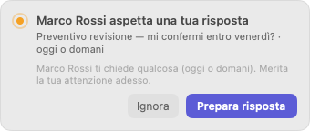
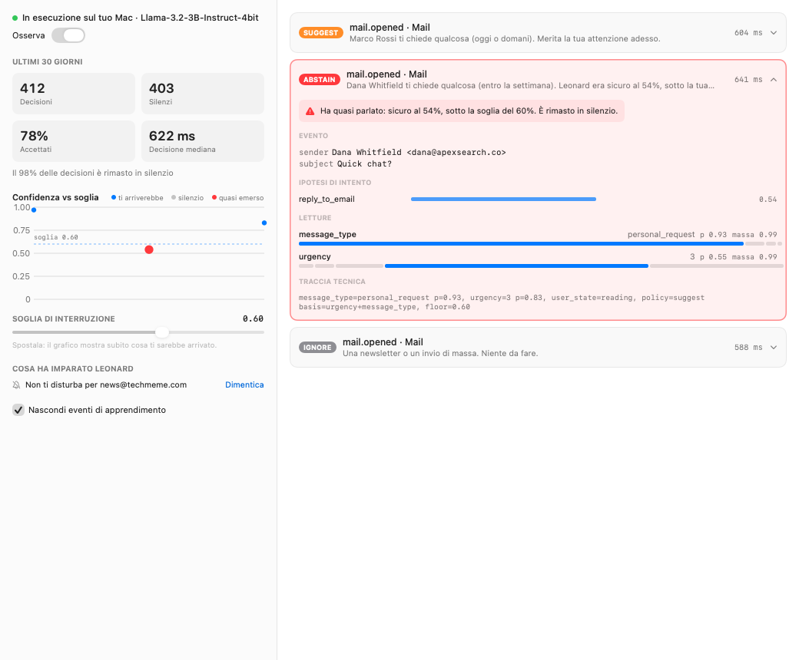
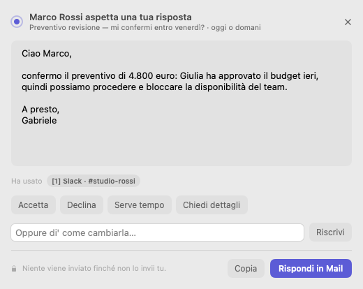
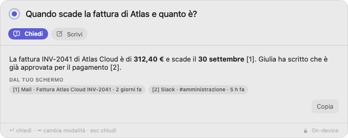
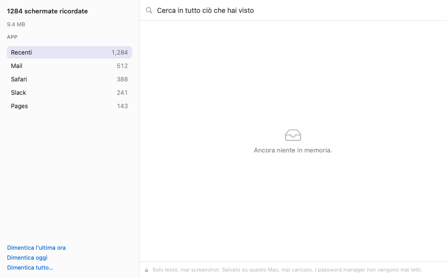

L'assistente che sa
quando stare in silenzio.
Leonard vive nella barra dei menu, legge quello che leggi e interviene solo quando qualcosa richiede davvero te — poi scrive la risposta al posto tuo. Gira interamente sul tuo Mac: niente cloud, niente account, niente esce.
14 giorni gratis · nessun account · nessuna carta di credito
Ciao Gabriele, ho rivisto i numeri del preventivo: il totale è 4.800 euro. Mi serve una conferma entro venerdì per bloccare la disponibilità del team. Grazie! Marco

Tre cose, fatte come le farebbe un collega fidato.
Capisce quale mail richiede te
Apri un messaggio in Mail. Se richiede te, Leonard te lo dice — una volta, senza disturbare — e prepara la risposta in una vera finestra di Mail. Newsletter, ricevute e messaggi informativi non ricevono una parola.
Risponde da ciò che hai visto
Premi ⌥ Spazio in qualsiasi app. «Qual era l'IBAN che mi ha mandato Marco?» «Quando scade la fattura di Atlas?» Leonard risponde da ciò che era sul tuo schermo, e ti mostra dove.
Scrive con te, in ogni app
Seleziona un testo ovunque per migliorarlo, tradurlo, riassumerlo o rispondere — e sostituiscilo al suo posto con un clic. In italiano e in inglese.
Decide quando non interromperti.
Ogni assistente proattivo muore di rumore. Leonard tratta il silenzio come una decisione: ognuna ha una confidenza calibrata, e la tua soglia decide cosa ti arriva. Mind mostra tutto — anche i quasi-interventi, quando Leonard stava per parlare e perché non l'ha fatto.
- Una confidenza su ogni decisione, e una soglia che scegli tu
- Ciò che vale la pena fare ma non interromperti aspetta in silenzio nella barra dei menu
- Impara dalle tue risposte — e silenzia i mittenti che ignori sempre
- Ogni regola che impara è visibile, e un clic la annulla


Bozze che conoscono il contesto.
Premi Prepara e Leonard scrive la risposta nella lingua e nel tono della mail, usando ciò che ha visto sul tuo schermo — il budget che Giulia ha approvato su Slack, il preventivo di cui avete parlato la settimana scorsa. Un clic la trasforma in un'accettazione, in un no garbato o in una richiesta di tempo.
- Apre una vera finestra di risposta in Mail. Non invia mai nulla.
- Segnala ogni data o cifra che non ha trovato nella mail
- Formale o amichevole, italiano o inglese — segue il mittente
Ritrova qualsiasi cosa tu abbia visto. Chiedi a parole tue.
Leonard ricorda il testo di ciò che passa sul tuo schermo — mail, documenti, chat, pagine web — così non devi ricordare dove l'hai visto. Le risposte citano la fonte, e quando non lo sa, lo dice.
- Funziona in ogni app, dalla tastiera
- Migliora, traduci, riassumi o rispondi a una selezione
- Le risposte si scrivono sotto i tuoi occhi, sul tuo Mac


Una memoria che puoi leggere — ed eliminare.
La memoria di Leonard è testo, mai screenshot: pochi megabyte al giorno, ricercabili, leggibili da te. Dimentica l'ultima ora, un'intera app o tutto, e sparisce davvero dal database.
- Password manager, Portachiavi e finestre private non vengono mai letti
- Numeri di carta, chiavi API e codici monouso vengono oscurati prima di essere salvati
- Dimentica dopo 30 giorni, se non scegli diversamente
Privato per costruzione, non per promessa.
Un assistente è utile quanto sa del tuo lavoro — e più sa, meno può permettersi di comunicarlo all'esterno. Leonard può sapere tutto proprio perché niente lascia il tuo Mac.
Il motore non ha accesso alla rete
Il motore di Leonard non può aprire connessioni. Un test blocca la build se mai potesse.
L'AI gira sul tuo Mac
Un modello linguistico residente in memoria su Apple silicon. Niente chiavi API, niente limiti d'uso, funziona offline.
Un solo download, verificato
Il modello si scarica una volta, quando lo decidi tu, e viene verificato con il suo SHA-256 pubblicato prima di essere caricato.
Nessun account, nessuna telemetria
Non c'è niente a cui iscriversi e niente che riferisca. Non sappiamo che usi Leonard finché non lo acquisti.
Testo, non screenshot
La memoria viene dal testo che macOS già espone agli strumenti di accessibilità — leggibile, ricercabile, leggero.
Eliminare vuol dire eliminare
Per elemento, per app, per ora o tutto. Anche lo storico delle decisioni segue una sua conservazione.
| Leonard | Assistenti AI nel cloud | |
|---|---|---|
| Dove viene letta la tua posta | Sul tuo Mac | Sui loro server |
| Funziona offline | Sì | No |
| Sa quando stare in silenzio | Calibrato, e la soglia la scegli tu | — |
| Ricorda il tuo schermo | Come testo, sul tuo Mac, eliminabile | Screenshot nel cloud, o per niente |
| Account richiesto | No | Sì |
| Prezzo | Una volta | Ogni mese |
Per chi non può incollare la posta dei clienti in un chatbot.
Se la tua casella è piena di cose che non sono tue da condividere — pratiche dei clienti, dati dei pazienti, trattative sotto NDA — Leonard è l'assistente che puoi usare.
Paghi una volta. È tuo per sempre.
Non gestiamo server per te, quindi non ti chiediamo un affitto. Ogni edizione ha tutte le funzioni e include un anno di aggiornamenti.
Personal
Per una persona.
- Tutte le funzioni
- Fino a 2 Mac
- 1 anno di aggiornamenti
- Funziona per sempre
- Supporto via email
Pro
Per il tuo studio, su ogni Mac che usi.
- Tutte le funzioni
- Fino a 3 Mac
- 1 anno di aggiornamenti
- Supporto prioritario, entro il giorno lavorativo successivo
- Fattura con partita IVA
Studio
Per team da 5 persone in su.
- Tutte le funzioni
- Licenze a volume
- Guida al deployment su Mac gestiti
- Chiamata di onboarding
- Supporto prioritario
Prezzi IVA inclusa dove applicabile. Prova gratuita di 14 giorni, rimborso garantito entro 30 giorni. Gli aggiornamenti dopo il primo anno sono facoltativi.
Domande, risposte chiare.
Leonard invia qualcosa su internet?
No. L'unica richiesta di rete che fa è il download del modello, una volta sola, avviato da te. Il motore che legge il tuo schermo non può aprire connessioni. «Cerca aggiornamenti» apre semplicemente il nostro sito nel browser. Puoi verificarlo con qualsiasi firewall, come Little Snitch o LuLu.
Su quali Mac funziona?
Su qualsiasi Mac con Apple silicon (M1 o successivi) e macOS 14 Sonoma o successivi. Consigliamo 16 GB di memoria; il modello ne usa circa 2 GB mentre Leonard è attivo.
Con quali app funziona?
L'aiuto proattivo sulla posta funziona con Mail di Apple. Chiedi a Leonard, l'aiuto alla scrittura e la memoria funzionano in ogni app che espone il proprio testo all'accessibilità di macOS — quasi tutte, compresi i browser, Pages, Word, Slack e Note.
Scrive bene come ChatGPT?
No, e non fingiamo il contrario. Un modello abbastanza piccolo da girare in privato sul tuo portatile scrive bene mail brevi, non saggi. Leonard compensa con il contesto — sa cosa hai visto — e segnala ogni data o cifra che non è riuscito a verificare, così la controlli prima di inviare.
Quali lingue parla?
Italiano e inglese, sia nell'app sia nella scrittura. Le risposte seguono la lingua della mail a cui rispondi.
Quali permessi chiede, e perché?
Due. Accessibilità, per leggere il testo della finestra davanti a te e inserire ciò che scrive. Automazione di Mail, per leggere il messaggio che apri e aprire una finestra di risposta. Leonard ti spiega il perché prima che macOS lo chieda, e funziona in modo ridotto se dici di no.
Cosa succede dopo il primo anno?
Leonard continua a funzionare, per sempre. La licenza include un anno di aggiornamenti; dopo, puoi rinnovarli se vuoi le nuove versioni, o tenere quella che hai.
Posso avere un rimborso?
Sì — entro 30 giorni dall'acquisto, per qualsiasi motivo. Scrivi a support@leonard.app.
È compatibile con il GDPR?
Leonard non invia dati personali a noi né a nessun altro: non c'è un responsabile del trattamento esterno, nessun trasferimento internazionale, nessun account da gestire. Ciò che conserva resta sul tuo Mac, sotto il tuo controllo, con conservazione ed eliminazione decise da te.
Ti presento Leonard.
Prova tutte le funzioni gratis per 14 giorni. Nessun account, nessuna carta, niente lascia il tuo Mac.
Scarica per Mac